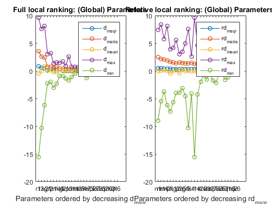
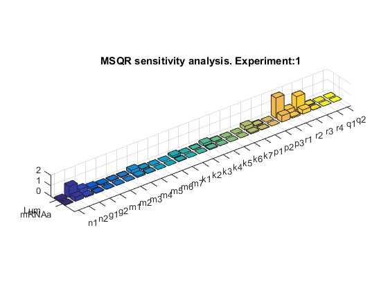
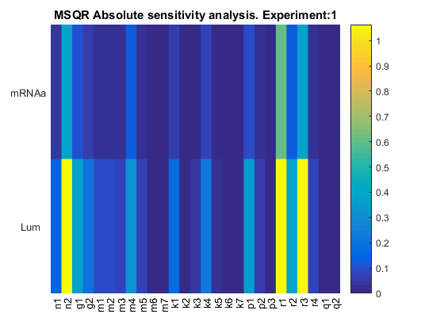
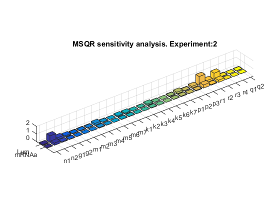
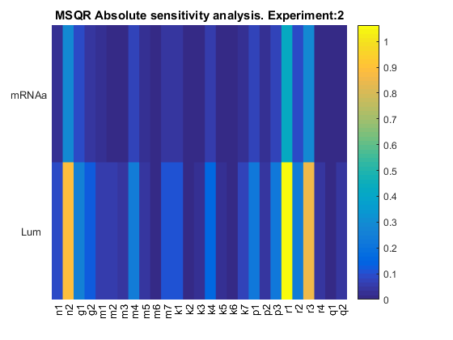
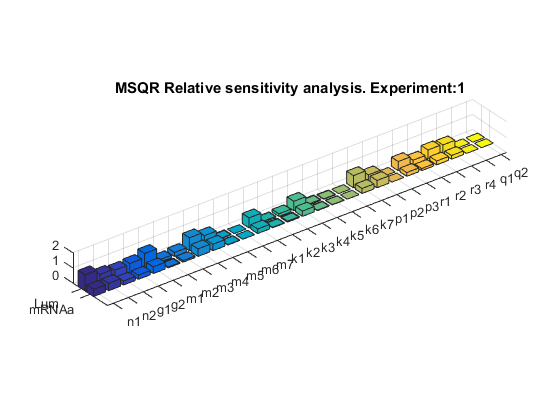
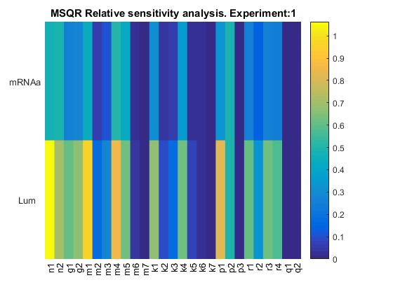
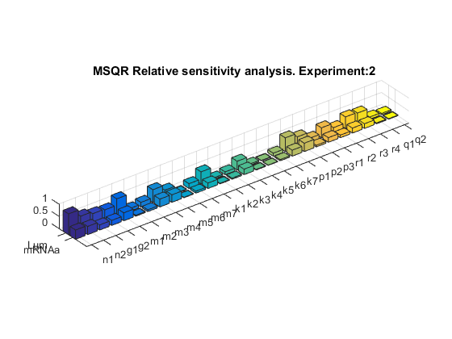
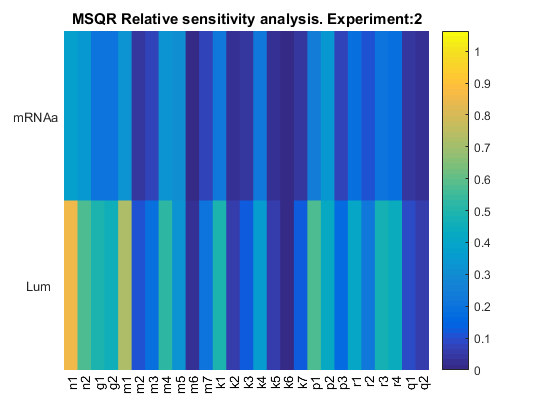

AMIGO_LRank
Contents
Task description
- Computes (local) sensitivities for a given value of model
unknowns, keeps information for all observables and all experiments
- Computes overall (for all experiments and observables) ranking of
global unknowns (experiment independent parameters and initial
conditions) for a given value of the unknowns and a given experimental scheme.
Call AMIGO_LRank from command line
It is recommended to keep all inputs in a 'problem_file'.m. SObs task can then be called in two different ways:
1. Using the inputs structure:
> problem_file
> AMIGO_LRank(inputs)
2. Using the input file:
> AMIGO_LRank('problem_file') > AMIGO_LRank('problem_file','run_ident')Example
% TITLE: The circadian clock in Arabidopsis thaliana

%============================ % RESULTS PATHS RELATED DATA %============================ inputs.pathd.results_folder='arabidopsis'; % Folder to keep results (in Results\) inputs.pathd.short_name='arabidopsis'; % Label to identify figures and reports %============================ % MODEL DEFINITION %============================ inputs.model.n_st=7; % Number of states inputs.model.n_par=27; % Number of parameters inputs.model.n_stimulus=1; % Number of stimuli inputs.model.st_names=char('CL_m','CL_c',...% Names of the states 'CL_n','CT_m','CT_c','CT_n','CP_n'); inputs.model.par_names=char('n1','n2','g1','g2','m1','m2','m3','m4','m5','m6',... 'm7','k1','k2','k3','k4','k5','k6','k7','p1','p2',... 'p3','r1','r2','r3','r4','q1','q2'); % Names of the parameters inputs.model.stimulus_names=char('light'); % Names of the stimuli inputs.model.eqns=... % Model equations char('dCL_m=q1*CP_n*light+n1*CT_n/(g1+CT_n)-m1*CL_m/(k1+CL_m)',... 'dCL_c=p1*CL_m-r1*CL_c+r2*CL_n-m2*CL_c/(k2+CL_c)',... 'dCL_n=r1*CL_c-r2*CL_n-m3*CL_n/(k3+CL_n)',... 'dCT_m=n2*g2^2/(g2^2+CL_n^2)-m4*CT_m/(k4+CT_m)',... 'dCT_c=p2*CT_m-r3*CT_c+r4*CT_n-m5*CT_c/(k5+CT_c)',... 'dCT_n=r3*CT_c-r4*CT_n-m6*CT_n/(k6+CT_n)',... 'dCP_n=(1-light)*p3-m7*CP_n/(k7+CP_n)-q2*light*CP_n');
IMPORTANT:
User may select any customised name but: n, t, u, y, ydot, par, tlast, told, pend and v which are reserved words
inputs.model.par=[7.5038 0.6801 1.4992 3.0412 10.0982... % Nominal parameter 1.9685 3.7511 2.3422 7.2482 1.8981 1.2 3.8045... % values 5.3087 4.1946 2.5356 1.4420 4.8600 1.2 2.1994... 9.4440 0.5 0.2817 0.7676 0.4364 7.3021 4.5703 1.0]; %============================================ % EXPERIMENTAL SCHEME (SIMULATION CONDITIONS) %============================================ inputs.exps.n_exp=2; % Number of experiments % EXPERIMENT 1 inputs.exps.exp_y0{1}=[0 0 0 0 0 0 0]; % Initial conditions inputs.exps.t_f{1}=120; % Experiments duration inputs.exps.n_obs{1}=2; % Number of observables inputs.exps.obs_names{1}=char('Lum','mRNAa'); % Names of the observables inputs.exps.obs{1}=char('Lum=CL_m',... % Observation function 'mRNAa=CT_m'); inputs.exps.u_interp{1}='sustained'; % Stimuli definition for experiment 1 inputs.exps.t_con{1}=[0 120]; % Input swithching times including: % Initial and final time inputs.exps.u{1}=1; % Values of the inputs for exp 1 inputs.exps.n_s{1}=15; % Number of sampling times % EXPERIMENT 2 inputs.exps.exp_y0{2}=[0 0 0 0 0 0 0]; % Initial conditions inputs.exps.t_f{2}=120; % Experiments duration inputs.exps.n_obs{2}=2; % Number of observables inputs.exps.obs_names{2}=char('Lum','mRNAa'); % Names of the observables inputs.exps.obs{2}=char('Lum=CL_m',... % Observation function 'mRNAa=CT_m'); inputs.exps.u_interp{2}='pulse-down'; % Stimuli definition for experiment 2 inputs.exps.n_pulses{2}=5; % Number of pulses inputs.exps.u_min{2}=0; % Minimum and maximum of inputs inputs.exps.u_max{2}=1; inputs.exps.t_con{2}=0:12:120; % Input switching times inputs.exps.n_s{2}=25; % Number of sampling times %================================ % CALL AMIGO2 from COMMAND LINE %================================ AMIGO_Prep(inputs); % To preprocess the model & generate Fortran, C or MATLAB code AMIGO_LRank(inputs); % To perform task LRank
***********************************
AMIGO2, Copyright @CSIC
AMIGO2_R2016a [Oct 2015]
***********************************
*Date: 07-Dec-2015
------>Pre processing....this may take a few seconds.
------>Checking inputs....
------> WARNING message
AMIGO_check_model: You did not specify inputs.model.exe_type, standard will be assumed
By default ode15s will be used.
By default sensmat will be used.
------> Generating Matlab file...
D:\AMIGO2_REPO_2014\AMIGO2R2016\Results\arabidopsis\fcn_arabidopsis.m
------>Files generated....
***********************************
AMIGO2, Copyright @CSIC
AMIGO2_R2016a [Oct 2015]
***********************************
*Date: 07-Dec-2015
------>Pre processing....this may take a few seconds.
------>Checking inputs....
------> WARNING message
AMIGO_check_model: You did not specify inputs.model.exe_type, standard will be assumed
By default ode15s will be used.
By default sensmat will be used.
------> WARNING message
You have not provided the sampling times.
Equidistant sampling will be assumed for experiment 1
Note however that you may modify your input file by adding
inputs.exps.t_s{iexp}
------> WARNING message
You have not provided the sampling times.
Equidistant sampling will be assumed for experiment 2
Note however that you may modify your input file by adding
inputs.exps.t_s{iexp}
Warning: Directory already exists.
------>Performing local sensitivity analysis and ranking of unknowns
---------------------------------------------------
Local sensitivity problem related active settings
---------------------------------------------------
senssolver: sensmat
ivp_RelTol: 1e-05
ivp_AbsTol: 1e-07
Backward Differentiation (BDF): on
modified sens_sys.m is used (ode15s based). For further info type 'help sens_sys'.
------> RANKING for experiment: 1
------>ABSOLUTE Ranking of model unknowns:
par value d_msqr d_mabs d_mean d_max d_min
____________________________________________________________________________________________
r1 2.8170e-01 1.0124e+00 3.8828e+00 -6.5972e-01 9.0513e+00 -1.5580e+01
r3 4.3640e-01 6.7858e-01 2.7104e+00 -1.2865e-01 5.9809e+00 -1.0345e+01
n2 6.8010e-01 5.6420e-01 2.3651e+00 7.3881e-01 8.1237e+00 -3.3620e+00
r2 7.6760e-01 2.0170e-01 7.6867e-01 1.3702e-01 3.2319e+00 -1.5892e+00
g1 1.4992e+00 1.9924e-01 7.9492e-01 3.6178e-02 3.0530e+00 -1.6793e+00
p1 2.1994e+00 1.8300e-01 6.3756e-01 -2.6724e-01 1.0981e+00 -3.0509e+00
m4 2.3422e+00 1.7132e-01 7.5841e-01 -2.2720e-01 1.2855e+00 -2.2944e+00
k4 2.5356e+00 1.1522e-01 5.1314e-01 1.6648e-01 1.4823e+00 -8.6503e-01
g2 3.0412e+00 1.0627e-01 3.9235e-01 1.0917e-01 1.6800e+00 -8.4677e-01
k1 3.8045e+00 8.7692e-02 3.4702e-01 -1.6589e-02 6.9305e-01 -1.3646e+00
n1 7.5038e+00 7.0418e-02 2.7725e-01 -1.4474e-02 5.5013e-01 -1.1009e+00
m1 1.0098e+01 4.8036e-02 1.8778e-01 9.7330e-03 7.5837e-01 -3.9792e-01
m2 1.9685e+00 4.3475e-02 1.4411e-01 1.2758e-01 6.4971e-01 -7.4068e-02
m5 7.2482e+00 4.0339e-02 1.8034e-01 -1.9000e-02 3.5974e-01 -4.4466e-01
r4 7.3021e+00 3.7834e-02 1.5078e-01 7.1813e-03 5.7991e-01 -3.2685e-01
m3 3.7511e+00 3.5987e-02 1.1508e-01 7.9837e-02 6.0864e-01 -1.0691e-01
p2 9.4440e+00 3.0285e-02 1.2476e-01 7.4522e-03 4.1398e-01 -1.8636e-01
k3 4.1946e+00 2.1671e-02 6.9605e-02 -4.7809e-02 9.8754e-02 -3.3603e-01
k5 1.4420e+00 1.7628e-02 6.9442e-02 9.4386e-03 2.5470e-01 -9.5837e-02
m6 1.8981e+00 8.3586e-03 3.6328e-02 -2.2413e-03 7.5655e-02 -1.0320e-01
k2 5.3087e+00 8.3118e-03 3.0979e-02 -1.7770e-02 5.5129e-02 -1.1295e-01
k6 4.8600e+00 2.5879e-03 1.1293e-02 7.6963e-04 3.1996e-02 -2.2379e-02
m7 1.2000e+00 0.0000e+00 0.0000e+00 0.0000e+00 0.0000e+00 0.0000e+00
k7 1.2000e+00 0.0000e+00 0.0000e+00 0.0000e+00 0.0000e+00 0.0000e+00
p3 5.0000e-01 0.0000e+00 0.0000e+00 0.0000e+00 0.0000e+00 0.0000e+00
q1 4.5703e+00 0.0000e+00 0.0000e+00 0.0000e+00 0.0000e+00 0.0000e+00
q2 1.0000e+00 0.0000e+00 0.0000e+00 0.0000e+00 0.0000e+00 0.0000e+00
____________________________________________________________________________________________
------>RELATIVE Ranking of model unknowns:
par value rd_msqr rd_mabs rd_mean rd_max rd_min
____________________________________________________________________________________________
____________________________________________________________________________________________
n1 7.5038e+00 5.8171e-01 2.3968e+00 -2.1393e-01 5.3423e+00 -9.0237e+00
m1 1.0098e+01 5.2934e-01 2.1703e+00 2.5133e-01 8.3651e+00 -4.5555e+00
m4 2.3422e+00 4.9852e-01 2.2386e+00 2.2887e-01 5.7664e+00 -3.7220e+00
p1 2.1994e+00 4.4038e-01 1.6188e+00 -6.0026e-01 3.1773e+00 -7.3295e+00
n2 6.8010e-01 4.3178e-01 1.9626e+00 -1.5848e-01 8.1237e+00 -4.5256e+00
m5 7.2482e+00 3.7945e-01 1.7218e+00 4.2833e-01 3.4303e+00 -3.1248e+00
k1 3.8045e+00 3.6734e-01 1.5231e+00 -1.3766e-01 3.3905e+00 -5.6708e+00
g2 3.0412e+00 3.6478e-01 1.4275e+00 2.5475e-01 5.5809e+00 -3.3878e+00
k4 2.5356e+00 3.5962e-01 1.6272e+00 -1.1624e-01 2.6032e+00 -4.0874e+00
p2 9.4440e+00 3.4168e-01 1.4902e+00 -5.4585e-01 2.7078e+00 -3.1881e+00
r3 4.3640e-01 3.3431e-01 1.3899e+00 -5.2025e-02 5.9809e+00 -1.0345e+01
g1 1.4992e+00 3.3376e-01 1.3894e+00 8.1250e-02 4.9996e+00 -3.3121e+00
r1 2.8170e-01 3.2950e-01 1.3247e+00 -9.2430e-02 9.0513e+00 -1.5580e+01
r4 7.3021e+00 3.1047e-01 1.2892e+00 5.9495e-02 4.6255e+00 -3.1398e+00
r2 7.6760e-01 1.7436e-01 6.9812e-01 8.7818e-02 3.2319e+00 -1.6049e+00
m3 3.7511e+00 1.4521e-01 5.1095e-01 3.4119e-01 2.4938e+00 -5.2758e-01
k3 4.1946e+00 9.5469e-02 3.3316e-01 -1.9417e-01 5.4495e-01 -1.5396e+00
m2 1.9685e+00 8.8976e-02 3.1647e-01 2.6843e-01 1.3970e+00 -1.9181e-01
k2 5.3087e+00 4.6721e-02 1.8658e-01 -6.9938e-02 3.8502e-01 -6.0258e-01
k5 1.4420e+00 4.0567e-02 1.4678e-01 2.9088e-02 5.1212e-01 -2.5298e-01
m6 1.8981e+00 2.1754e-02 9.2182e-02 3.2920e-02 2.3161e-01 -1.3566e-01
k6 4.8600e+00 1.7031e-02 7.2919e-02 -2.5741e-02 1.0770e-01 -1.7458e-01
m7 1.2000e+00 0.0000e+00 0.0000e+00 0.0000e+00 0.0000e+00 0.0000e+00
k7 1.2000e+00 0.0000e+00 0.0000e+00 0.0000e+00 0.0000e+00 0.0000e+00
p3 5.0000e-01 0.0000e+00 0.0000e+00 0.0000e+00 0.0000e+00 0.0000e+00
q1 4.5703e+00 0.0000e+00 0.0000e+00 0.0000e+00 0.0000e+00 0.0000e+00
q2 1.0000e+00 0.0000e+00 0.0000e+00 0.0000e+00 0.0000e+00 0.0000e+00
____________________________________________________________________________________________
------> RANKING for experiment: 2
------>ABSOLUTE Ranking of model unknowns:
par value d_msqr d_mabs d_mean d_max d_min
____________________________________________________________________________________________
r1 2.8170e-01 6.1790e-01 3.2629e+00 -3.4592e-01 9.5754e+00 -1.0885e+01
n2 6.8010e-01 4.6507e-01 2.4636e+00 8.8359e-01 6.9966e+00 -6.1835e+00
r3 4.3640e-01 4.5002e-01 2.4270e+00 9.2462e-02 7.5580e+00 -7.8407e+00
g1 1.4992e+00 1.3466e-01 7.3157e-01 -2.9649e-02 2.3837e+00 -2.2633e+00
r2 7.6760e-01 1.2784e-01 6.7006e-01 7.0420e-02 2.4116e+00 -1.9839e+00
m4 2.3422e+00 1.2728e-01 6.9939e-01 -2.5028e-01 1.5260e+00 -1.9874e+00
p3 5.0000e-01 1.2155e-01 5.8831e-01 -6.9164e-03 2.6186e+00 -1.7189e+00
p1 2.1994e+00 1.1705e-01 5.8916e-01 -2.1857e-01 1.3804e+00 -2.3205e+00
k4 2.5356e+00 8.3603e-02 4.6172e-01 1.7891e-01 1.3138e+00 -9.0344e-01
g2 3.0412e+00 6.5342e-02 3.3806e-01 7.8735e-02 1.1913e+00 -8.9733e-01
m7 1.2000e+00 6.1060e-02 2.9597e-01 1.3109e-03 8.6715e-01 -1.2799e+00
k1 3.8045e+00 5.5768e-02 3.0405e-01 1.4514e-02 9.2743e-01 -1.0334e+00
n1 7.5038e+00 4.8268e-02 2.6334e-01 9.2804e-03 7.8859e-01 -8.9417e-01
k7 1.2000e+00 3.8137e-02 1.8505e-01 -4.4310e-04 7.8540e-01 -5.4307e-01
m1 1.0098e+01 3.0755e-02 1.6752e-01 -7.2003e-03 5.9107e-01 -4.9705e-01
m2 1.9685e+00 3.0708e-02 1.4133e-01 1.2368e-01 5.6602e-01 -6.5941e-02
r4 7.3021e+00 2.5242e-02 1.3635e-01 -5.2162e-03 4.4381e-01 -4.2357e-01
p2 9.4440e+00 2.5104e-02 1.3441e-01 1.4495e-02 3.6629e-01 -3.1532e-01
m5 7.2482e+00 2.5004e-02 1.3896e-01 -1.4917e-02 1.8324e-01 -4.0430e-01
m3 3.7511e+00 2.4238e-02 1.1356e-01 7.2529e-02 4.8440e-01 -1.7654e-01
q2 1.0000e+00 1.9440e-02 9.3723e-02 -2.2078e-03 2.7671e-01 -3.7505e-01
k3 4.1946e+00 1.4075e-02 6.7716e-02 -4.3965e-02 8.3803e-02 -2.4698e-01
k5 1.4420e+00 1.2188e-02 6.7067e-02 1.1329e-02 2.0304e-01 -9.2496e-02
q1 4.5703e+00 7.2777e-03 3.5241e-02 -5.2881e-04 1.5665e-01 -1.0296e-01
m6 1.8981e+00 5.8741e-03 3.2775e-02 -2.6983e-03 7.1671e-02 -8.8711e-02
k2 5.3087e+00 5.3179e-03 2.5596e-02 -1.6923e-02 3.1410e-02 -9.8955e-02
k6 4.8600e+00 1.8301e-03 1.0221e-02 9.1823e-04 2.7637e-02 -2.1212e-02
____________________________________________________________________________________________
------>RELATIVE Ranking of model unknowns:
par value rd_msqr rd_mabs rd_mean rd_max rd_min
____________________________________________________________________________________________
____________________________________________________________________________________________
n1 7.5038e+00 4.6933e-01 2.5204e+00 1.9825e-01 7.3958e+00 -8.8729e+00
m1 1.0098e+01 3.9386e-01 2.1295e+00 -1.2075e-01 7.8930e+00 -5.4567e+00
n2 6.8010e-01 3.3329e-01 1.8817e+00 1.8515e-01 6.9966e+00 -6.1835e+00
p1 2.1994e+00 3.0834e-01 1.6095e+00 -3.4844e-01 3.9214e+00 -6.7491e+00
m4 2.3422e+00 3.0700e-01 1.8423e+00 -4.4582e-02 4.7498e+00 -3.0608e+00
k1 3.8045e+00 2.7239e-01 1.4685e+00 1.1678e-01 4.1485e+00 -5.1991e+00
p2 9.4440e+00 2.7025e-01 1.5155e+00 -2.9725e-01 3.0638e+00 -3.9380e+00
g1 1.4992e+00 2.6490e-01 1.4116e+00 -1.4345e-01 4.7257e+00 -4.4833e+00
r3 4.3640e-01 2.5978e-01 1.3705e+00 1.6166e-01 7.5580e+00 -7.8407e+00
g2 3.0412e+00 2.4826e-01 1.3005e+00 7.0691e-02 4.7909e+00 -4.0014e+00
r4 7.3021e+00 2.4311e-01 1.2863e+00 -1.4381e-01 4.2855e+00 -4.2114e+00
r1 2.8170e-01 2.2535e-01 1.1776e+00 6.7580e-02 9.5754e+00 -1.0885e+01
m5 7.2482e+00 2.2052e-01 1.2566e+00 4.0754e-01 3.4725e+00 -1.9080e+00
k4 2.5356e+00 2.1391e-01 1.3062e+00 6.2186e-02 2.1848e+00 -3.0344e+00
r2 7.6760e-01 1.2541e-01 6.5800e-01 -1.3693e-02 2.4479e+00 -1.9839e+00
m7 1.2000e+00 1.0810e-01 4.8957e-01 8.5542e-02 2.5756e+00 -1.6897e+00
m3 3.7511e+00 1.0208e-01 5.0423e-01 2.5563e-01 2.4028e+00 -7.5702e-01
p3 5.0000e-01 9.0017e-02 4.0649e-01 -7.6022e-02 2.6186e+00 -2.1592e+00
k7 1.2000e+00 6.7461e-02 3.0586e-01 -5.2241e-02 1.0369e+00 -1.6041e+00
k3 4.1946e+00 6.3194e-02 3.2806e-01 -1.4828e-01 7.1486e-01 -1.3078e+00
m2 1.9685e+00 6.0335e-02 2.9732e-01 2.2735e-01 1.2481e+00 -3.3642e-01
q1 4.5703e+00 4.9364e-02 2.2278e-01 -4.2721e-02 7.8765e-01 -1.1877e+00
k2 5.3087e+00 2.8383e-02 1.5100e-01 -5.6941e-02 4.5855e-01 -4.5862e-01
q2 1.0000e+00 2.8214e-02 1.2800e-01 1.6516e-02 6.4921e-01 -4.3388e-01
k5 1.4420e+00 2.8019e-02 1.3674e-01 2.7949e-02 6.6014e-01 -2.3197e-01
m6 1.8981e+00 1.3048e-02 7.5510e-02 2.3746e-02 1.8078e-01 -1.1043e-01
k6 4.8600e+00 1.0351e-02 6.0114e-02 -1.8540e-02 8.8087e-02 -1.3680e-01
____________________________________________________________________________________________
------> OVERALL RANKING
------>ABSOLUTE Ranking of GLOBAL model unknowns:
par value d_msqr d_mabs d_mean d_max d_min
____________________________________________________________________________________________
____________________________________________________________________________________________
r1 2.8170e-01 8.1513e-01 3.5729e+00 -5.0282e-01 9.5754e+00 -1.5580e+01
r3 4.3640e-01 5.6430e-01 2.5687e+00 -1.8095e-02 7.5580e+00 -1.0345e+01
n2 6.8010e-01 5.1464e-01 2.4144e+00 8.1120e-01 8.1237e+00 -6.1835e+00
g1 1.4992e+00 1.6695e-01 7.6325e-01 3.2644e-03 3.0530e+00 -2.2633e+00
r2 7.6760e-01 1.6477e-01 7.1937e-01 1.0372e-01 3.2319e+00 -1.9839e+00
p1 2.1994e+00 1.5002e-01 6.1336e-01 -2.4290e-01 1.3804e+00 -3.0509e+00
m4 2.3422e+00 1.4930e-01 7.2890e-01 -2.3874e-01 1.5260e+00 -2.2944e+00
k4 2.5356e+00 9.9411e-02 4.8743e-01 1.7270e-01 1.4823e+00 -9.0344e-01
g2 3.0412e+00 8.5804e-02 3.6521e-01 9.3953e-02 1.6800e+00 -8.9733e-01
k1 3.8045e+00 7.1730e-02 3.2553e-01 -1.0373e-03 9.2743e-01 -1.3646e+00
p3 5.0000e-01 6.0776e-02 2.9415e-01 -3.4582e-03 2.6186e+00 -1.7189e+00
n1 7.5038e+00 5.9343e-02 2.7029e-01 -2.5971e-03 7.8859e-01 -1.1009e+00
m1 1.0098e+01 3.9395e-02 1.7765e-01 1.2663e-03 7.5837e-01 -4.9705e-01
m2 1.9685e+00 3.7091e-02 1.4272e-01 1.2563e-01 6.4971e-01 -7.4068e-02
m5 7.2482e+00 3.2671e-02 1.5965e-01 -1.6958e-02 3.5974e-01 -4.4466e-01
r4 7.3021e+00 3.1538e-02 1.4356e-01 9.8254e-04 5.7991e-01 -4.2357e-01
m7 1.2000e+00 3.0530e-02 1.4798e-01 6.5547e-04 8.6715e-01 -1.2799e+00
m3 3.7511e+00 3.0112e-02 1.1432e-01 7.6183e-02 6.0864e-01 -1.7654e-01
p2 9.4440e+00 2.7695e-02 1.2958e-01 1.0974e-02 4.1398e-01 -3.1532e-01
k7 1.2000e+00 1.9069e-02 9.2527e-02 -2.2155e-04 7.8540e-01 -5.4307e-01
k3 4.1946e+00 1.7873e-02 6.8661e-02 -4.5887e-02 9.8754e-02 -3.3603e-01
k5 1.4420e+00 1.4908e-02 6.8255e-02 1.0384e-02 2.5470e-01 -9.5837e-02
q2 1.0000e+00 9.7201e-03 4.6862e-02 -1.1039e-03 2.7671e-01 -3.7505e-01
m6 1.8981e+00 7.1163e-03 3.4551e-02 -2.4698e-03 7.5655e-02 -1.0320e-01
k2 5.3087e+00 6.8149e-03 2.8288e-02 -1.7346e-02 5.5129e-02 -1.1295e-01
q1 4.5703e+00 3.6389e-03 1.7620e-02 -2.6440e-04 1.5665e-01 -1.0296e-01
k6 4.8600e+00 2.2090e-03 1.0757e-02 8.4393e-04 3.1996e-02 -2.2379e-02
____________________________________________________________________________________________
------>RELATIVE Ranking of GLOBAL model unknowns:
par value rd_msqr rd_mabs rd_mean rd_max rd_min
____________________________________________________________________________________________
n1 7.5038e+00 5.2552e-01 2.4586e+00 -7.8428e-03 7.3958e+00 -9.0237e+00
m1 1.0098e+01 4.6160e-01 2.1499e+00 6.5288e-02 8.3651e+00 -5.4567e+00
m4 2.3422e+00 4.0276e-01 2.0404e+00 9.2147e-02 5.7664e+00 -3.7220e+00
n2 6.8010e-01 3.8253e-01 1.9222e+00 1.3332e-02 8.1237e+00 -6.1835e+00
p1 2.1994e+00 3.7436e-01 1.6141e+00 -4.7435e-01 3.9214e+00 -7.3295e+00
k1 3.8045e+00 3.1987e-01 1.4958e+00 -1.0438e-02 4.1485e+00 -5.6708e+00
g2 3.0412e+00 3.0652e-01 1.3640e+00 1.6272e-01 5.5809e+00 -4.0014e+00
p2 9.4440e+00 3.0597e-01 1.5028e+00 -4.2155e-01 3.0638e+00 -3.9380e+00
m5 7.2482e+00 2.9999e-01 1.4892e+00 4.1794e-01 3.4725e+00 -3.1248e+00
g1 1.4992e+00 2.9933e-01 1.4005e+00 -3.1098e-02 4.9996e+00 -4.4833e+00
r3 4.3640e-01 2.9704e-01 1.3802e+00 5.4818e-02 7.5580e+00 -1.0345e+01
k4 2.5356e+00 2.8677e-01 1.4667e+00 -2.7027e-02 2.6032e+00 -4.0874e+00
r1 2.8170e-01 2.7742e-01 1.2511e+00 -1.2425e-02 9.5754e+00 -1.5580e+01
r4 7.3021e+00 2.7679e-01 1.2878e+00 -4.2159e-02 4.6255e+00 -4.2114e+00
r2 7.6760e-01 1.4988e-01 6.7806e-01 3.7063e-02 3.2319e+00 -1.9839e+00
m3 3.7511e+00 1.2365e-01 5.0759e-01 2.9841e-01 2.4938e+00 -7.5702e-01
k3 4.1946e+00 7.9332e-02 3.3061e-01 -1.7123e-01 7.1486e-01 -1.5396e+00
m2 1.9685e+00 7.4656e-02 3.0689e-01 2.4789e-01 1.3970e+00 -3.3642e-01
m7 1.2000e+00 5.4052e-02 2.4478e-01 4.2771e-02 2.5756e+00 -1.6897e+00
p3 5.0000e-01 4.5008e-02 2.0325e-01 -3.8011e-02 2.6186e+00 -2.1592e+00
k2 5.3087e+00 3.7552e-02 1.6879e-01 -6.3439e-02 4.5855e-01 -6.0258e-01
k5 1.4420e+00 3.4293e-02 1.4176e-01 2.8519e-02 6.6014e-01 -2.5298e-01
k7 1.2000e+00 3.3730e-02 1.5293e-01 -2.6121e-02 1.0369e+00 -1.6041e+00
q1 4.5703e+00 2.4682e-02 1.1139e-01 -2.1360e-02 7.8765e-01 -1.1877e+00
m6 1.8981e+00 1.7401e-02 8.3846e-02 2.8333e-02 2.3161e-01 -1.3566e-01
q2 1.0000e+00 1.4107e-02 6.4002e-02 8.2581e-03 6.4921e-01 -4.3388e-01
k6 4.8600e+00 1.3691e-02 6.6516e-02 -2.2141e-02 1.0770e-01 -1.7458e-01
____________________________________________________________________________________________
> NaN% of successful simulationn
> NaN% of successful sensitivity calculations
------>Plotting results....
------> WARNING message
Overall ranking plots are available for more than one unknown initial condition
<strong>
------>Results (report and struct_results.mat) and plots were kept in the directory:
</strong><strong>D:\AMIGO2_REPO_2014\AMIGO2R2016\Results\arabidopsis\LRank_arabidopsis_run1</strong>
Click <a href="matlab: cd('D:\AMIGO2_REPO_2014\AMIGO2R2016\Results\arabidopsis\LRank_arabidopsis_run1')">here</a> to go to the results folder or <a href="matlab: load('D:\AMIGO2_REPO_2014\AMIGO2R2016\Results\arabidopsis\LRank_arabidopsis_run1\strreport_arabidopsis_run1.mat')">here</a> to load the results.
         See also
References
Model was taken from:
Locke J.C.W; A.J. Millar; M.S. Turner. Modelling genetic networks with noisy and varied experimental data: the circadian clock in Arabidopsis thaliana. J Theor Biol,2005, 234:383-393.
Details on ranking of parameters:
Brun R, Reichert P: Practical identifiability analysis of large environmental simulation models. Water Resources Res 2001, 37:1015-1030.
Balsa-Canto E, AA Alonso, JR Banga.An iterative identification procedure for dynamic modeling of biochemical networks. BMC Systems Biology, 2010, 4:11.
%AMIGO_htmldoc_inputs(inputs,fullfile(pwd,'html','lrankex1.html'));